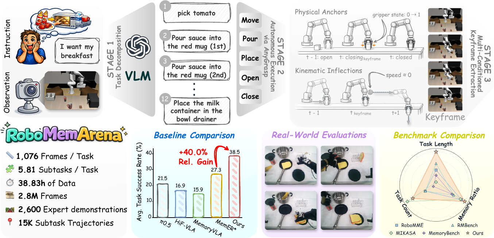

Benchmark Examples
Sequence
Place cookies & tomato sauce in a container sequentially
Place cream cheese & chocolate pudding in a container sequentially
Pour tomato sauce twice, place cookies into microwave
Counting
Pour tomato sauce twice into frypan, place into drainer
Pick chocolate, pour tomato, place into drainer
Pour wine bottle twice into mug
Occlusion
Open all drawers sequentially, then place butter into the drawer with an item
Open all drawers sequentially, then place butter into the empty drawer
Place two items into the microwave for heating
Transferring
Pick chocolate & butter, cabinet 1 → cabinet 2
Pick tomato, milk & OJ, cabinet 1 → cabinet 2
Pick chocolate & cream, plate 1 → plate 2
Overview

Figure 1. RoboMemArena converts natural-language instructions into keyframe-annotated trajectories through VLM-based task decomposition, autonomous execution, closed-loop verification, and targeted human refinement of unsuitable annotations.
Abstract
Memory is a critical component of robotic intelligence, as robots must rely on past observations and actions to accomplish long-horizon tasks in partially observable environments. However, existing robotic memory benchmarks still lack multimodal annotations for memory formation, provide limited task coverage and structural complexity, and remain restricted to simulation without real-world evaluation. We address this gap with RoboMemArena, a large-scale benchmark of 26 tasks, with average trajectory lengths exceeding 1,000 steps per task and 68.9% of subtasks being memory-dependent. Its generation pipeline uses a vision-language model (VLM) to design and compose subtasks, generates full trajectories through atomic functions, and provides memory-related annotations, including subtask instructions and native keyframe annotations, while paired real-world memory tasks support physical evaluation. We further design PrediMem, a dual-system VLA in which a high-level VLM planner manages a memory bank with recent and keyframe buffers and uses a predictive coding head to improve sensitivity to task dynamics. Extensive experiments on RoboMemArena show that PrediMem outperforms all baselines and provides insights into memory management, model architecture, and scaling laws for complex memory systems.
PrediMem
PrediMem is a dual-system memory framework built around a high-level VLM planner and a low-level VLA executor. The high-level planner receives the current observation together with a memory bank composed of a recent-frame buffer and a keyframe buffer. It predicts the current subtask and decides whether the current frame should be stored as a keyframe, while the low-level policy executes the latest subtask-conditioned action chunk.
During training, PrediMem adds a predictive coding head that predicts the next-frame visual latent representation from the current hidden state. This auxiliary objective makes the VLM representation more sensitive to physical state transitions such as grasp closure, object placement, repeated pouring, and drawer closure. The predictive coding head is removed at inference time, so the deployed system keeps the same dual-system architecture and inference cost.
Benchmark Results
RoboMemArena exposes a clear memory gap in existing policies. The reactive π0.5 baseline reaches 21.5 % TSR and 38.7 % CSR, while the matched MemER implementation improves to 27.3 % TSR and 49.1 % CSR. PrediMem achieves the best overall simulation performance with 38.5 % TSR and 55.2 % CSR.
Ablations show that both memory components matter. Removing the predictive coding head drops TSR to 32.3 %, while removing the keyframe bank drops TSR to 17.7 %. The best predictive-loss weight is 0.1, and an uncapped keyframe bank performs best for long-horizon tasks where early observations remain decision-critical.
On five real-world memory tasks, PrediMem reaches 52 % average success over 10 rollouts per task, compared with 40 % for MemER and 20 % for π0.5. These results indicate that keyframe-grounded memory remains useful under physical execution noise.
View the leaderboard page for future submissions and category-wise metrics.
BibTeX
@article{robomemarena2025,
title = {RoboMemArena: A Comprehensive and Challenging
Robotic Memory Benchmark},
author = {Huashuo Lei and Wenxuan Song and Huarui Zhang and Jieyuan Pei and Jiayi Chen and Haodong Yan and Han Zhao and Pengxiang Ding and Zhipeng Zhang and Lida Huang and Donglin Wang and Yan Wang and Haoang Li},
journal = {arXiv preprint arXiv:XXXX.XXXXX},
year = {2025}
}Benchmark Task Details
Overview of all 26 RoboMemArena tasks, their corresponding memory types, average total timesteps, and key challenges.
| Task Name | Memory Type | Avg. #Steps | Task Challenge | Brief Description |
|---|---|---|---|---|
| Task Suite: Multi-Object Transferring | ||||
| Transfer Chocolate Butter | T | 866 | transferring | Pick and place chocolate and butter from plate1 to plate2, respectively. |
| Transfer Butter Cheese | T | 779 | transferring | Pick and place butter and cheese from plate1 to plate2, respectively. |
| Transfer Popcorn Cookies | T | 779 | transferring | Pick and place popcorn and cookies from plate1 to plate2, respectively. |
| Transfer Sauce Milk Juice | T | 1265 | transferring | Pick and place tomato sauce, milk, and orange juice from cabinet1 to cabinet2. |
| Task Suite: Multi-Object Occlusion | ||||
| Put Butter in Not-Empty Drawer | O | 1020 | occlusion | Open all drawers in order. Put butter into the drawer that already contains an object. |
| Put Butter in Empty Drawer | O | 1806 | occlusion | Open all drawers in order. Put butter into the empty drawer. |
| Put Cookies Butter into Drawer Respectively | O + C | 1835 | occlusion, multi-placement | Open all drawers in order. Put cookies into the top drawer and put butter into another drawer. |
| Put Cookies Chocolate into Middle Drawer | O | 1370 | occlusion | Open all drawers in order. Put cookies into the middle drawer and then put chocolate into the same drawer. |
| Put Butter Cookies into Middle Drawer | O | 1377 | occlusion | Open all drawers in order. Put butter into the middle drawer and then put cookies into the same drawer. |
| Put Cookies Chocolate into Drawer Respectively | O | 1832 | occlusion, multi-placement | Open all drawers in order. Put cookies into the top drawer and put chocolate into another drawer. |
| Put Butter Chocolate into Middle Drawer | O | 1502 | occlusion | Open all drawers in order. Put butter into the middle drawer and then put chocolate into the same drawer. |
| Put Cookies Chocolate into Microwave | O | 1195 | occlusion | Put cookies into the microwave and then put chocolate into the location where the cookies were placed. |
| Put Butter Chocolate into Microwave | O | 1175 | occlusion | Put butter into the microwave and then put chocolate into the location where the butter was placed. |
| Put Cream Popcorn into Microwave | O | 1175 | occlusion | Put cream into the microwave and then put popcorn into the location where the cream was placed. |
| Put Cookies Popcorn into Microwave | O | 1195 | occlusion | Put cookies into the microwave and then put popcorn into the location where the cookies were placed. |
| Task Suite: Multi-Object Counting | ||||
| Pour Sauce on Cookies ×2 Place Sauce into Drainer | C + O | 624 | counting, occlusion | Pour tomato sauce over cookies twice and place the sauce bottle into the bowl drainer. |
| Pour Sauce on Frypan ×2 Place Sauce into Drainer | C + O | 537 | counting, occlusion | Pour tomato sauce over the frypan twice and place the sauce bottle into the bowl drainer. |
| Pour Sauce Twice over Chocolate in Frypan Place Sauce into Drainer | C | 910 | counting | Pick and place chocolate into the frypan, pour tomato sauce over it twice, then place the sauce bottle into the bowl drainer. |
| Pour Sauce ×2 over Butter in Frypan | C | 958 | counting | Put butter into the frypan and pour sauce over it twice. |
| Pour Wine into Mug Twice | C | 472 | counting | Pour wine into the mug twice. |
| Pour Milk Twice over Butter in Frypan | C | 1055 | counting | Pick and place butter into the frypan, then pour milk over it twice. |
| Pour Milk ×2 over Mug Place Milk into Drainer | C + O | 594 | counting, occlusion | Pick milk from the table, pour it into the mug twice, then place the milk container into the bowl drainer. |
| Task Suite: Multi-Object Sequence | ||||
| Put Cookies Sauce into Basket in Order | S | 742 | sequence | Pick and place cookies into the basket, then pick and place tomato sauce into the same basket. |
| Put Butter Popcorn into Basket in Order | S | 708 | sequence | Pick and place butter into the basket, then pick and place popcorn into the same basket. |
| Put Cream Chocolate into Basket in Order | S | 708 | sequence | Pick and place cream into the basket, then pick and place chocolate into the same basket. |
| Pour Sauce ×2 Put Cookies into Microwave | S | 1565 | sequence | Pour tomato sauce over cookies twice, then put the cookies into the microwave. |